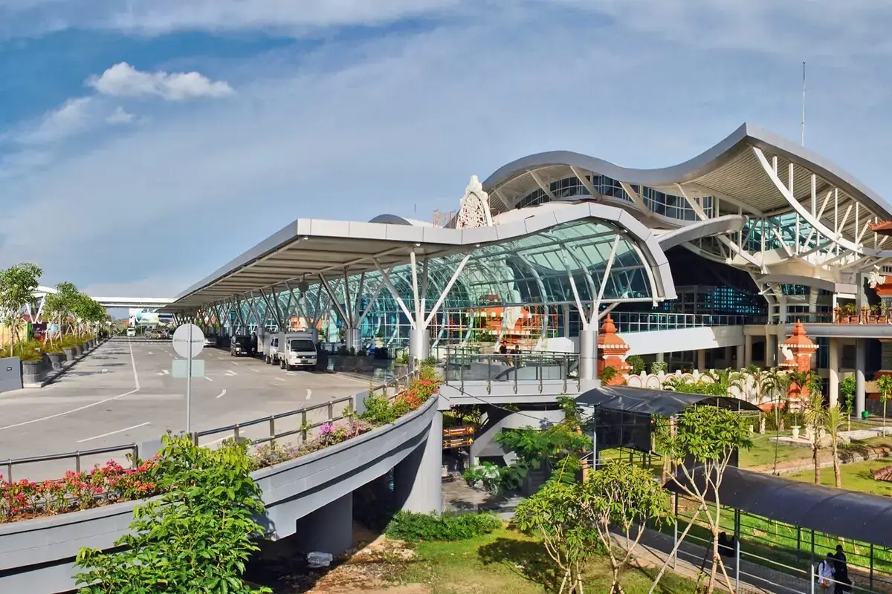
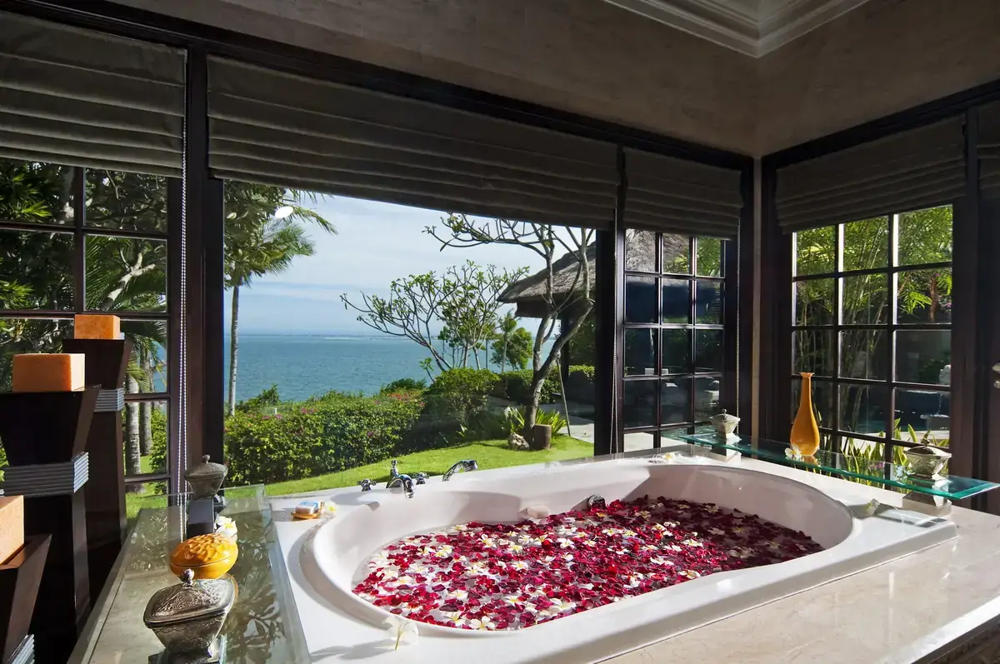
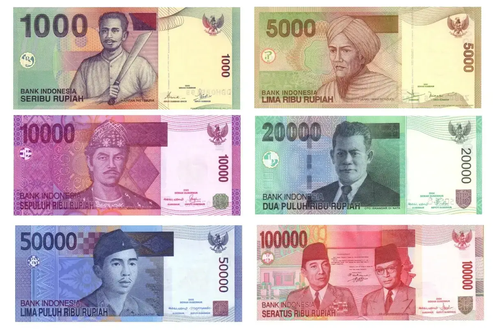
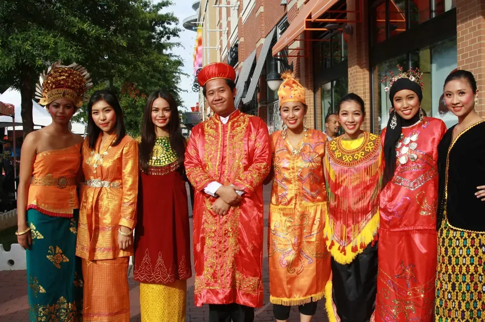
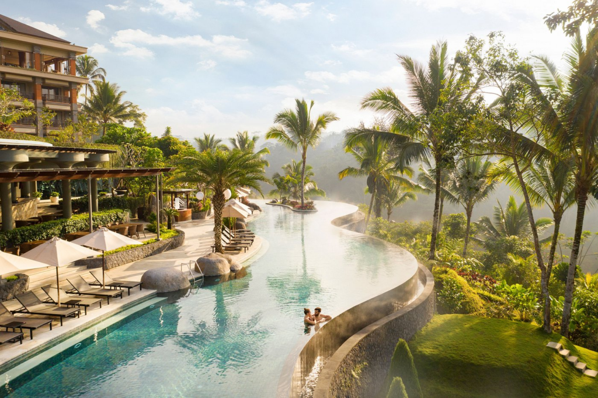
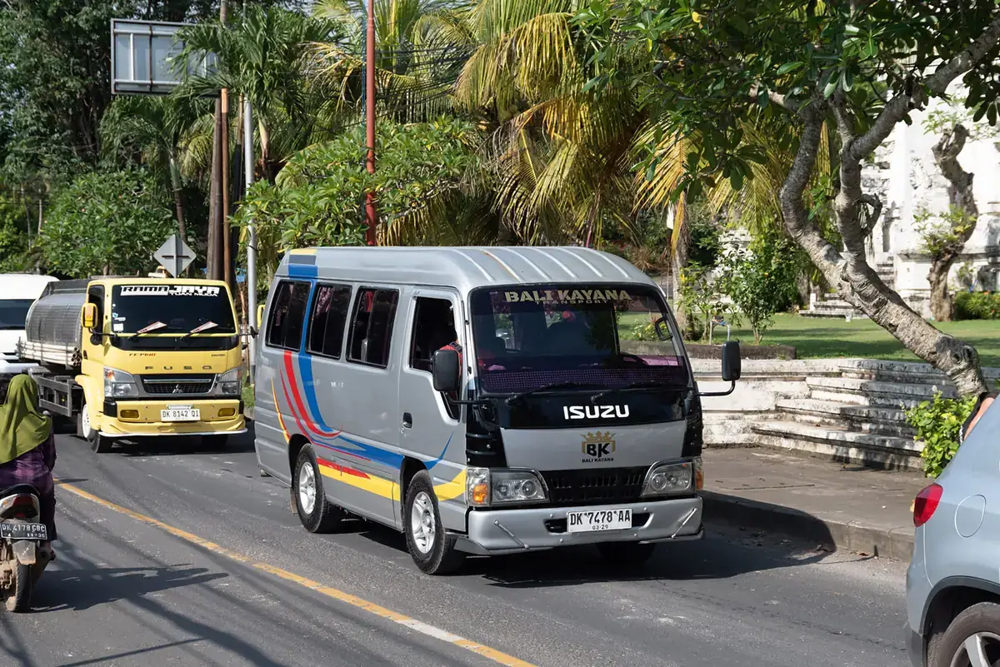

Перед отъездом
Проверьте наличие необходимых для поездки документов:

- заграничный паспорт (действителен не меньше 6 месяцев на момент вылета из Индонезии);
- ксерокопия загранпаспорта (может пригодиться при утрате загранпаспорта и в случае непредвиденных обстоятельств);
- авиабилеты или маршрут/квитанции электронного билета;
- ваучер ;
- страховой медицинский полис;
Правила въезда в Индонезию
С 18 августа 2025 года для всех прибывающих станет обязательным заполнение формы ALL Indonesia: https://allindonesia.imigrasi.go.id/ . Доступ к занесению данных открывается за 3 дня до въезда в Индонезию. После заполнения анкеты система сгенерирует QR-код, который нужно будет сохранить и предъявить по прибытии.
В случае путешествия с детьми
Несовершеннолетний гражданин РФ, следующий совместно хотя бы с одним из родителей, выезжает из РФ по своему загранпаспорту.
Несовершеннолетний российский гражданин, выезжающий из Российской Федерации без сопровождения родителей, должен иметь при себе кроме заграничного паспорта нотариально оформленное согласие родителей на его выезд за границу с указанием срока выезда и государство, которое он намерен посетить.
При следовании несовершеннолетнего российского гражданина через государственную границу РФ совместно с одним из родителей предъявлять письменное согласие второго родителя не нужно, если только от него ранее в пограничные органы не поступало заявление о несогласии на выезд из РФ своих детей.
Если у несовершеннолетнего ребенка и выезжающего с ним родителя разные фамилии, то рекомендуем взять с собой нотариально заверенную копию свидетельства о рождении для подтверждения родства. На практике отсутствие такого подтверждения служило основанием для отказа ребенку в пересечении границы.
Беременным женщинам
Перед полетом мы рекомендуем ознакомиться с правилами авиакомпании на необходимость предоставления письменного согласия врача на полет, а также иных документов для осуществления авиаперелета. Сотрудники авиакомпании имеют полное право отказать в авиаперевозке или потребовать медицинское освидетельствование в аэропорту вылета в случае нарушения правил.
Собирая багаж

Рекомендуем все ценные вещи, документы и деньги положить в ручную кладь и взять с собой в самолет.
В багаж следует упаковать все металлические острые и режущие предметы (маникюрные ножницы, пилочки для ногтей, перочинный ножик и т. п.), а также любые жидкости, гели и аэрозоли (за исключением детского питания и лекарств, если в них есть необходимость) — проносить подобные предметы в ручной клади запрещено .
Не забывайте собрать и взять с собой аптечку первой помощи , которая поможет при легких недомоганиях, сэкономит время на поиски лекарственных средств и избавит от нежелательного общения на иностранном языке.
В российском аэропорту вылета/прилета
Перед выездом в аэропорт получите дополнительную информацию о возможно произошедших изменениях в условиях вылета, используя сайт авиакомпании, выполняющей рейс, или по телефону ее справочной службы.
Рекомендуем заранее, не позднее чем за три часа до вылета, прибыть к месту регистрации пассажиров для прохождения установленных процедур регистрации, оформления багажа, и выполнения требований, связанных с пограничным, таможенным, санитарно-карантинным, ветеринарным и другими видами контроля, установленными законодательством РФ.
Таможенный контроль до начала путешествия

Перед полетом рекомендуем проверять действующие правила вывоза физическими лицами наличной иностранной валюты из РФ, товаров и иных предметов на сайте Федеральной Таможенной Службы customs.gov.ru. Обращаем внимание на то, что в настоящее время действуют ограничения.
Внимание! Запрещено перемещение на выезде и въезде:
- культурных ценностей,
- объектов фауны и флоры, находящихся под угрозой исчезновения,
- оружия и боеприпасов к нему без разрешения уполномоченных органов.
Незаконное перемещение товаров или валюты через таможенную границу РФ или их недекларирование, либо недостоверное декларирование влечет за собой административную или уголовную ответственность.
Внимание! Запрещено на выезде и въезде:
- принимать от посторонних лиц чемоданы, посылки и другие предметы для перевозки на борту воздушного судна.
Таможенный контроль по окончании путешествия
Если вы не перемещаете через границу валюту и предметы, которые необходимо декларировать, то вам следует проходить зону таможенного контроля по «Зелёному коридору».
Актуальную информацию о ввозе валюты, товаров и иных предметов для личного пользования, вы найдете на сайте Федеральной Таможенной Службы customs.gov.ru.
Внимание! Недекларирование товаров в случае превышения стоимостных или весовых норм, а также наличных денежных средств и (или) денежных инструментов влечёт за собой административную или уголовную ответственность.
Таможенный контроль в Индонезии
.jpg)
Ввоз и вывоз наличной иностранной валюты в Индонезию не ограничен. Обязательному декларированию подлежат суммы, эквивалентные 100 млн индонезийских рупий.
Пассажир имеет право беспошлинно ввезти с собой:
- 200 сигарет или 50 сигар, или 100 г курительного табака;
- 1 литр спиртных напитков, а также подарков и сувениров на сумму не более 250 долларов США на человека или 1000 долларов США на семью.
Необходимо заполнить декларацию, которая должна быть сохранена до самого выезда из страны. Ввозимые в Индонезию и на Бали фото- и видеокамеры должны быть зарегистрированы властями. Декларации подлежат следующие вещи:
- телефоны,
- ноутбук,
- видеокамера,
- DVD /CD диски и другие носители информации.
Запрещен ввоз:
- оружия,
- наркотиков,
- взрывчатых веществ,
- порнографии,
- беспроводных телефонов,
- лекарственных препаратов китайского происхождения,
- печатных изданий на китайском языке,
- есть также ограничения на ввоз плодов, овощей, мяса, рыбы и изделий растительного происхождения.
Запрещен вывоз:
- редких животных и птиц,
- резьбы по дереву с острова Бали,
- предметов и вещей, представляющих историческую и художественную ценность и не имеющих специального разрешения.
Регистрация на рейс и оформление багажа
До начала поездки настоятельно рекомендуем уточнить время начала и окончания регистрации на рейс, а также время посадки на борт. Указанную информацию вы можете посмотреть на официальном сайте авиакомпании. Помните, что у разных авиакомпаний могут быть свои правила.
Регистрация пассажиров и оформление багажа производятся на основании именного авиабилета или распечатанных на бумажном носителе маршрута и/или квитанции электронного билета, а также заграничного паспорта пассажира.
При регистрации пассажиру выдается посадочный талон, который необходимо сохранять до момента возможного предъявления авиакомпании претензий по качеству предоставленных услуг авиаперевозки.
Перед посадкой на рейс рекомендуем проверить номер выхода и время начала посадки на рейс на информационном табло в аэропорту.
Пассажиру, опоздавшему ко времени окончания регистрации пассажиров и оформления багажа или посадки в воздушное судно, может быть отказано в перевозке.
Каждый авиаперевозчик устанавливает свои нормы провоза багажа, а также габариты и вес ручной клади, провозимой в салоне самолета. Уточняйте данную информацию перед вылетом.
За провоз багажа сверх установленной нормы бесплатного провоза багажа взимается дополнительная плата по тарифу, установленному перевозчиком.
Перевозчик имеет право отказать туристу в перевозе багажа, вес или объем которого не соответствуют установленным нормам.
Паспортный контроль
Для прохождения пограничного контроля необходимо предъявить заграничный/внутренний российский паспорт. Пограничные органы ФСБ РФ при осуществлении пограничного контроля имеют право запрашивать у туристов дополнительные документы (авиабилет, посадочный талон, ваучер и т. п.), а также проводить опрос лиц, следующих через границу.
Санитарный контроль
Туристам сертификат о прививках не требуется. Рекомендуется сделать прививки против брюшного тифа и паратифа, а также против гепатита А и Б.
Ветеринарный контроль
Выезд на Бали с домашними животными запрещён на официальном уровне.
В аэропорту прилета/вылета Индонезии

По прибытии в аэропорт Бали нужно последовательно:
- пройти паспортный контроль,
- получить свой багаж,
- пройти таможенный контроль,
- выйти из здания аэропорта,
- найти встречающего гида с табличкой «туроператора»,
- предъявить гиду туристский ваучер.
Паспортный контроль. Виза
Граждане РФ могут оформить визу заранее или получить по прилёте (VOA — visa on arrival). Рекомендуем иметь при себе мелкие купюры USD для оплаты. Срок действия визы 30 дней с возможностью однократного платного продления на 30 дней.
Ознакомиться с более подробной информацией о необходимых документах на получение визы для въезда на Бали можно на официальных ресурсах индонезийской визовой службы.
Внимание ! Для граждан, не имеющих гражданства РФ, могут быть установлены иные правила въезда на территорию Индонезии.
Обращаем ваше внимание на то, что для въезда в страну вам необходимо показать обратный билет (на английском языке).
Бали

Ба́ли — остров в Малайском архипелаге, в группе Малых Зондских островов, в составе одноименной провинции Индонезии. Омывается с юга Индийским океаном, с севера — Тихим океаном. С запада отделен одноименным проливом от острова Ява, с востока — Ломбокским проливом от острова Ломбок. Денпасар — столица и крупнейший город острова.
Время
Разница во времени с Москвой составляет +5 часов.
Климат
Климат на Бали экваториально-муссонный, вместо привычного деления на 4 сезона здесь различают лишь два: сухой (июнь – октябрь) и влажный (ноябрь – март), наибольшее количество осадков выпадает в январе – феврале. В некоторых районах Бали разница между ними почти незаметна. В период влажного сезона осадки выпадают ночью в виде кратковременных (1 – 2 часа) грозовых ливней.
Среднегодовые температуры незначительно колеблются вокруг отметки 26 °C. Самый жаркий месяц — февраль, самый прохладный и сухой — июль. Температура воды в океане 26 … 28 °C.
Язык
Индонезийский (Bahasa Indonesia).
Также на острове существует балийский язык. Большинство балийцев, связанных с индустрией туризма и сервиса, говорят на английском.
Валюта

Индонезийская рупия (IDR).
Менять валюту на индонезийские рупии надежнее в банках, а также в специальных пунктах, которые называются Authorized money changer и No commission. Невыгодный курс предлагает обменник аэропорта Денпасар. Большинство обменных пунктов не принимают доллары США, выпущенные ранее 2006 года. Банки работают с 08:00 до 16:00 по рабочим дням, с 08:00 до 11:00 по субботам.
Для оплаты покупок, такси и прочего необходимо иметь при себе наличные в рупиях, так как иностранная валюта не принимается к оплате.
Население
Население острова Бали — около 4 млн человек, делится на 365 этнических групп (крупнейшие — яванцы, сунды, мадурцы, малайцы).
Религия
Большинство балийцев (83,5 % населения) исповедует местную разновидность индуизма, которая называется «Агама Хинду Дхарма»; 13,3 % населения — мусульмане. Христиан (1,7 %) и буддистов (0,5 %) мало — это китайцы, коренное население, а также проживающие на острове иностранцы.
Обычаи

Остерегайтесь касаться чьей-либо головы, а также стоять рядом с сидящим на земле, так как голова здесь считается священной. Бурные проявления чувств считаются оскорбительными для окружающих. Предметы нужно подавать и принимать правой рукой — левая рука считается «нечистой». Указывать на что-либо следует большим пальцем правой руки, при этом локоть должен быть прижат к боку.
Без рубашки или в купальнике допустимо появляться только на пляже. Загорать в обнаженном виде неприлично и противозаконно. Посещая мечеть, женщина должна быть с покрытой головой и не иметь обнаженных участков тела; перед входом принято разуваться.
Праздники и нерабочие дни
1 января – Новый год;
21 апреля – День Картини;
17 августа – День провозглашения независимости;
1 октября – День защиты;
5 октября – День вооруженных сил;
28 октября – День клятвы молодежи;
10 ноября – День героев;
25 декабря – Рождество.
Остальные праздники — религиозные, их даты определяются по лунным календарям: мусульманские — по Хиджре, а индуистско-буддийские — по календарям «сака» и « вуку».
В отеле

В день приезда расселение осуществляется в соответствии с правилами, принятыми в отеле. Обычно начиная с 14:00 по местному времени. Просим ознакомиться на месте с условиями предоставления услуг в отеле и придерживаться установленных отелем правил.
В день выезда до наступления расчетного часа (как правило, 12:00) необходимо освободить свой номер и оплатить дополнительные услуги: телефонные переговоры, мини-бар, заказ питания и напитков в номер, массаж и др. Свой багаж можно оставить в камере хранения отеля и оставаться на территории отеля до прибытия трансфера. Если вы не сдали номер до 12:00, стоимость комнаты оплачивается полностью за следующие сутки.
Напряжение электросети
Напряжение в электросети Индонезии: 127/230 В, 50 Гц. В стране распространены розетки нескольких основных типов: C (Europlug) — с двумя круглыми штырями, розетки типа F — с двумя штырями и двумя заземляющими клипсами вверху и внизу, а также розетки британского образца типа G с тремя плоскими массивными контактами, расположенных треугольником.
Телефон
Чтобы позвонить из России на Бали, следует набирать со стационарного телефона: 8(гудок) – 10 (международная линия) – 62(код Индонезии) – 361(код Бали) — 000-000 (номер абонента);
Чтобы позвонить из России на Бали, следует набирать с мобильного телефона: +62 (код страны) — код оператора — номер абонента.
Чтобы позвонить с Бали в Россию, следует набирать со стационарного телефона: 001 (международная линия) – 7 (код РФ) – код города – номер абонента;
Чтобы позвонить с Бали в Россию, следует набирать с мобильного: 01017 (код IP телефонии) – 7 (код РФ) – код оператора – номер абонента.
*В случае если вы звоните из отеля, начала нужно набрать «9».
Экстренные телефоны
- полиция: 110;
- скорая помощь: 118;
- пожарная служба: 113;
- справочная служба: 108.
Транспорт

Система общественного транспорта в Индонезии находится на низком уровне. В Джакарте и других крупных городах страны имеются автобусные линии, которыми пользуется небогатая часть местного населения.
Рекомендуем заказывать такси прямо в отеле — на стойке «TAXI», «TRANSPORT» или на стойке регистрации — и пользоваться такси по счётчику. Для этого достаточно сказать: «Meter taxi, please!» («Такси со счётчиком, пожалуйста!»).
Из всех видов такси рекомендуем пользоваться услугами компании Blue Bird (машины голубого цвета) — это одна из лучших компаний подобного сервиса.
Стоимость поездки:
- 1 км проезда — около 7 000–10 000 рупий (≈ 50–70 центов);
- посадка — 7 000 рупий (≈ 50 центов);
- минимальная стоимость поездки — 35 000 рупий.
Оплата — только в местной валюте и по окончании поездки.
Правила личной гигиены и безопасности
Перед путешествием мы советуем ознакомиться с «Полезными советами российским гражданам, выезжающим за рубеж», размещенными на сайте МИД РФ: https://www.kdmid.ru/info-for-traveling-abroad/useful-tips-for-russian-citizens-traveling-abroad/, а также с памяткой МИД РФ «Каждому, кто направляется за границу», и памяткой Роспотребнадзора выезжающим за рубеж.
Не нарушайте правила безопасности, установленные авиакомпаниями, транспортными организациями, гостиницами, местными органами власти.
.jpg)
Категорически не рекомендуем приобретать экскурсии и дополнительные туристские услуги в неизвестных туристских и экскурсионных агентствах. Вам может быть дана заведомо ложная информация о самой экскурсии, вам не будет гарантирована безопасность предоставленных услуг и исправность используемого оборудования, тем самым можно подвергнуть себя серьезной опасности.
Перед поездкой рекомендуется взять с собой ксерокопии основных страниц (с фотографией, личными данными, отметкой о регистрации) заграничного и внутреннего паспортов РФ. Паспорт (или ксерокопию паспорта), визитную карточку отеля носите с собой.
При возникновении транспортных аварий, конфликтов с полицией, другими органами местной власти необходимо поставить в известность представителя принимающей стороны или сотрудников посольства/консульства РФ.
Не оставляйте детей одних без присмотра на пляже, у бассейна, на водных горках и аттракционах.
Мойте руки перед едой. Не пейте сырую воду, особенно из открытых водоемов. Для питья рекомендуется использовать минеральную воду, которую можно приобрести в магазинах и барах отеля.
Возьмите в путешествие индивидуальную аптечку с необходимым набором лекарств.
Помните, что многообразные представители животного и растительного мира могут быть не только красивыми, но и опасными. При укусах и ранах немедленно обратитесь к врачу.
Не рекомендуется носить с собой большие наличные суммы. Кражи денег и вещей у туристов случаются довольно часто, как и махинации с фальшивыми долларами. Не следует вынимать из кошелька на виду у всех большие суммы денег.
Покидая автобус на остановках и во время экскурсий, не оставляйте в нем ручную кладь, особенно ценные вещи и деньги.
Важные документы, наличные деньги и драгоценности лучше хранить в сейфе номера. Если в номере нет сейфа, его можно взять в аренду за плату у администрации отеля или сдать на хранение портье в сейф на стойке регистрации.
Рекомендуется сдавать ключ от номера на стойку регистрации отеля, в случае его утери поставить в известность администрацию.
Во многих отелях запрещается выносить из номера полотенца на пляж или к бассейну. Не приносите на пляж полотенца или инвентарь из номера без разрешения персонала.
Если в номере стоит мини-бар, то все напитки и закуски, взятые из него, как правило, должны быть оплачены.
Запрещено курить в постели.
В случае потери паспорта
Незамедлительно обращайтесь в дипломатическое представительство, в консульское учреждение или в представительство МИД РФ, которое находится в пределах приграничной территории.
Вам необходимо получить свидетельство на въезд в РФ (REENTRY CERTIFICATE TO THE RUSSIAN FEDERATION), которое называется временным загранпаспортом. Выдается на срок до 15 дней для того, чтобы турист успел купить обратный билет и улететь на родину.
Для того чтобы вам выдали свидетельство на возвращение в РФ, необходимо представить следующие документы:
- основной документ, на основании которого будут предприниматься какие-либо действия, — заявление о выдаче свидетельства ( образец заявления ),
- две фотографии (цветные или ч/б, размер — 35х45 мм на однотонном фоне с четким изображением лица),
- внутренний паспорт РФ, также возможно предоставление других документов для подтверждения своей личности — водительских прав или служебного удостоверения.
Срок выдачи свидетельства на возвращение в РФ составляет 2 рабочих дня со дня регистрации заявления.
Вернувшись в РФ, в трехдневный срок необходимо сдать свидетельство в организацию, выдавшую паспорт (ОВИР, МИД).
Все вышеперечисленные документы регламентированы пунктом 20 Приказа МИД РФ от 28.06.2012 года № 10304.
Полезная информация
Посольство РФ в Индонезии
Адрес: 12940, Jakarta, H.R. Rasuna Said, Kav. Х-7, 1-2.
Тел.: (62-21) 522-29-12/14.
Факс: (62-21) 522-29-16.
E-mail: rusemb.indonesia@mid.ru
Почётный консул на Бали (г-н Нуку Камка)
Адрес: Perumahan Bali Kencana Resort II, Block Merpati No. 10, Ungasan 80364, Bali, Indonesia.
Тел.: (+62) 851 0079 1560.
Факс: (+62361) 279-1561.
E-mail: bali@russiaconsul.com
Посольство Республики Индонезия в РФ
Адрес: г. Москва, Новокузнецкая ул., 12.
Тел.: +7 (495) 951-95-49/50.
Факс: +7 (495) 735-44-31.
E-mail: moscow.kbri@kemlu.go.id